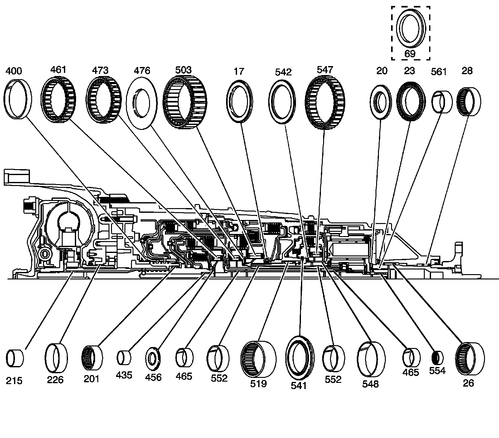
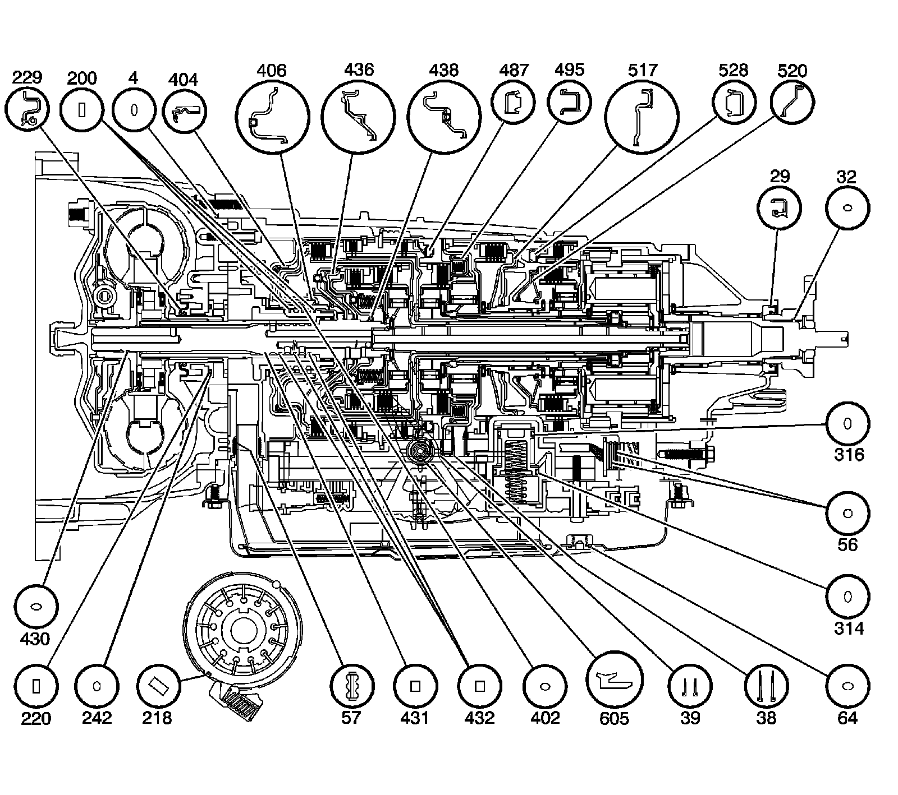

Component Location
Component Location
Bushing and Bearing Locations
Bushing and Bearing Locations:

17 - Low Clutch Roller Thrust Bearing
20 - Input and Reaction Carrier Thrust Bearing
23 - Input and Reaction Carrier Thrust Bearing - Model Dependent
26 - Output Shaft Bearing
28 - Output Shaft Bearing
69 - Input and Reaction Carrier Thrust Bearing - Model Dependent
201 - Input Shaft Bearing Assembly
215 - Turbine Shaft Bushing
226 - Torque Converter Bushing
400 - Reverse Clutch Housing Bushing
435 - Forward Clutch Bushing
456 - Forward Clutch Roller Inner Bearing
461 - Forward Clutch Sprag Assembly
465 - Input and Reaction Carrier Bushing Assembly - 2
465 - Input and Reaction Carrier Bushing Assembly - 2
473 - Intermediate Clutch Sprag Assembly
476 - Intermediate Clutch Roller Thrust Bearing Assembly
503 - Low Clutch Sprag Assembly
519 - Input and Reaction Bearing Assembly
541 - Input and Reaction Bearing Assembly
542 - 2nd Clutch Roller Inner Race Bearing Assembly
547 - 2nd Clutch Sprag Assembly
548 - Input and Reaction Carrier Bushing
552 - Reaction Carrier Bushing - 2
552 - Reaction Carrier Bushing - 2
554 - Input and Reaction Bearing Assembly
561 - Input and Reaction Carrier Bushing
Seal Locations
Seal Locations:

4 - Torque Converter Housing Fluid Seal Assembly
29 - Transmission Prop Shaft Flange Seal
32 - Transmission Prop Shaft Flange - O-ring Seal
38 - Center Support Fluid Passage Sleeve
39 - Overdrive Clutch Fluid Passage Sleeve
56 - A/Transmission Wiring Harness - O-ring Seal - 2
57 - Automatic Transmission Filter Seal - 2
64 - Automatic Transmission Fluid Pan Drain Plug Seal
200 - Reverse Clutch Housing Fluid Seal Ring - 3
218 - Automatic Transmission Fluid Pump Slide Seal
220 - Automatic Transmission Fluid Pump Slide Ring
229 - Torque Converter Housing Seal
242 - Automatic Transmission Fluid Pump Slide O-ring Seal
314 - Clutch Accumulator Piston Fluid Seal Ring
316 - Clutch Accumulator Piston Fluid Seal Ring
402 - Reverse Clutch Piston Inner Seal
404 - Reverse Clutch Piston
406 - Direct Clutch Piston Assembly
430 - Input Shaft - O-Ring Seal
431 - Input Shaft Fluid Seal Ring
432 - Input Shaft Fluid Seal Ring - 3
436 - Forward Clutch Piston Assembly
438 - Coast Clutch Piston Assembly
487 - Overdrive Clutch Piston Assembly
495 - Intermediate Clutch Piston Assembly
517 - Low and Reverse Clutch Piston
520 - 2nd Clutch Piston
528 - 2nd Coast Clutch Piston Assembly
605 - Manual Shift Shaft Seal